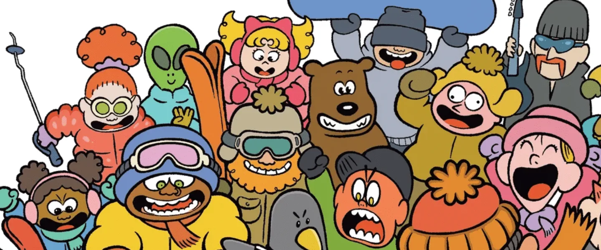
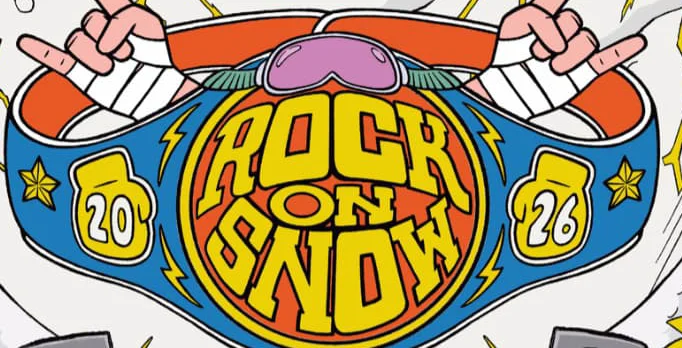

11 → 13 décembre 2026
Avoriaz · soirée de collecte au Strike Roc, [À COMPLÉTER : date et heure de la soirée]
Une veste ou un vêtement chaud rapporté au bar, une bière ou un soft offert. Tout ce qui est collecté part directement à quelqu'un qui en a besoin.